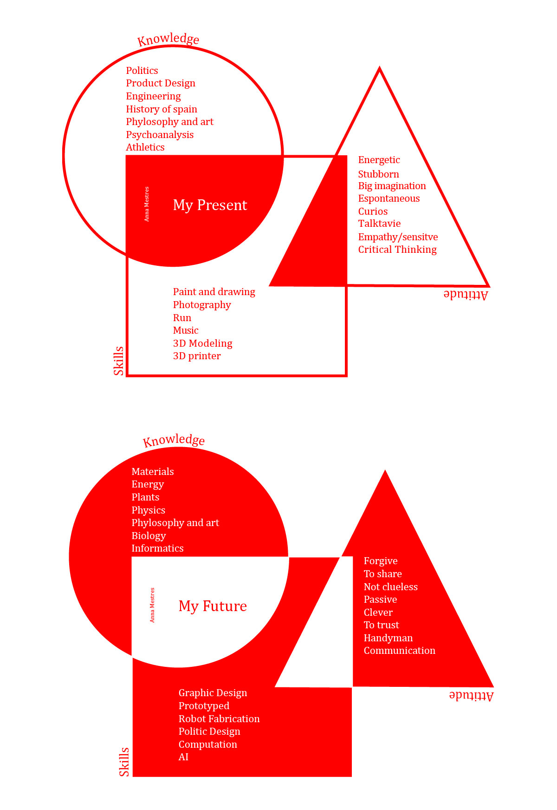

WHAT IS YOUR FIGHT? This is my poster of what is my fight.

I am always angry about how all the societal stigmas affects on people and on me in our daily life. All the class struggle, to be a woman, to be Catalan, to be white, to be myself...
How we all live in a bubble trying to be better in a capitalist world that press people to their decline as a human. I am a person with strong ideals and critical thoughts. We are all different. But we are all humans. It’s a cute paradox.
We all want to improve ourselves to be better, but we don’t even know what it is to be better.
In my opinion, being better does not have to be related only to ourselves, moreover, we live in a society, so self-improvement has to have a positive after-effect on society in order to be better.
So, I try to focus my personal struggle on something that interests me and can affect society, in this case, in the way of thinking.

MY SKILLS - ATTITUDE - KNOWLEDGE
In my opinion, our skills, knowledge and attitude is shared with each of the experiences and opportunities we have had throughout our lives. As well as their personality. In my life, which is not very long yet, I feel that I have not had the opportunity to explore my mind in all its capacities, nor to do all the things I wanted to do in my student days, which fortunately I still have, because of the social injustice of class. In many ways I have not been able to afford to pay for private studies that would allow me to improve as a person, or to participate in courses or public interventions to help us, because I had to work or I was already very tired of working part-time and studying for a degree. I have always had to look for other ways. And it is always the same, they are longer and with many more stones. That makes me tired at my young age. Tired, worried and stressed. The world is not made to improve us as people, but to increase our purchasing power. Whose? I don't know, but it's not me.
Even though I'm tired, I've been able to enjoy many experiences throughout my life. And those little things are the ones that I have been able to take advantage of to make me a better person. Because even if the world doesn't care, it's me who decides to be better.

There are too many things to understand in this world to let them ignore. Grown up is in our DNA. All the expects that I want to improve are correlated with the aspect of make a change in the world.
MAP OF THE COURSES
The truth is that I don't expect many of the things I have said to be correct or to be fulfilled. I just hope that I learn and that I am given the necessary tools to be able to grow as a person and bring out all that I can give. However, I think that the subject that I'm going to like the most is going to be Tech Beyond the myth, I think it fits my personality and my interests.